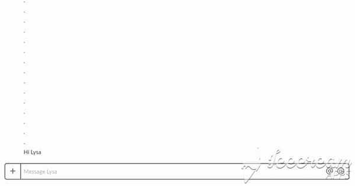

Lysten provides a system for students and professors to have an interactive conversation
throughout the semester, even when a physical meeting space isn't an option.
Bringing a personal, friendly touch to the student-teacher feedback loop, Lysten allows
online educators to collect the same valuable information that is exchanged naturally
in the in-person setting.
The result? A better learning environment for everyone.

Lysa: a Companion for Students
At any time throughout the semester, online students can initiate a chat with Lysa, the friendly
chatbot component of the Lysten system. They can chat about a wide range of topics including
course materials, technology, registration, and more. Lysa participates actively in the conversation,
prompting the student for details and examples. This back and forth helps refine comments, making them
more helpful and constructive.

Lysten: Making Data Actionable for Professors and Administrators
Feedback collected by Lysa is displayed through easy-to-use dashboards, where faculty can view and digest
a large number of comments quickly and effectively. Machine learning models help extract common topics
and themes, which are visualized on a Topic Stream dashboard that illuminates trends over time. Faculty
can also view the full set of comments through the Student Responses dashboard; filters and sorting
create a format that is easy to handle.
Easy Integration
Lysa can integrate directly into an online program's existing Slack environment, making it easy for students to
reach out and removing a significant effort barrier that often prevents students from providing course
feedback.
Faculty members are given personal login credentials to ensure that each professor can view only the data
relevant to his or her specific class. Administrators and student support can be given permission to view
all courses and terms, so that they can observe overall trends and patterns across the entire education
environment.
The dashboards automatically update periodically, so that new feedback is incorporated into
the visualizations weekly. With so much happening automatically, faculty members can spend less time
organizing piles of comments, and more time diving into the data itself.
See How It Works
Sign Up to Chat with Lysa
A trial version of Lysa is currently deployed in an independent test Slack
instance. Visit this link to sign up!
You'll need an email address from either @berkeley.edu or @ischool.berkeley.edu.
This trial instance doesn't require users to provide their full name as the username -- feel
free to sign up with an anonymous handle. Note that while the Lysten system collects
only the anonymous Slack ID for each user (ex. UFR6C3N5B), your handle will be visible to everyone
in the Lysten workspace.
View Demo Dashboards
See what the faculty dashboards look like using the links below.
*Note: these dashboards are for demonstration purposes and use manufactured data.*